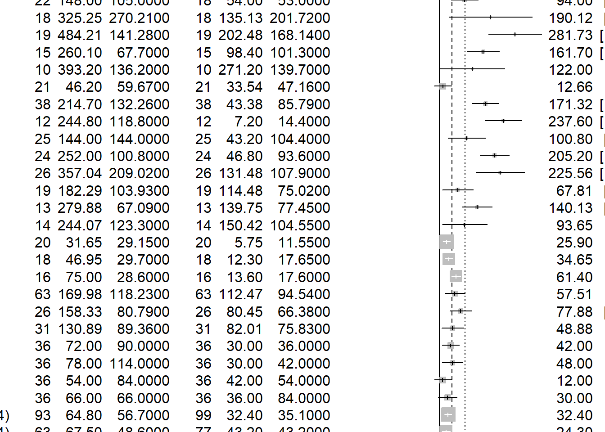
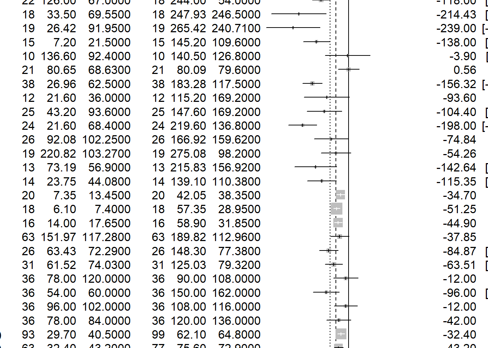
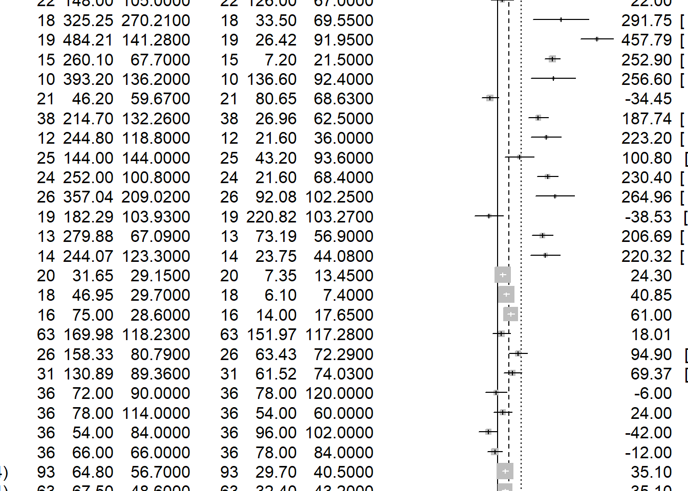
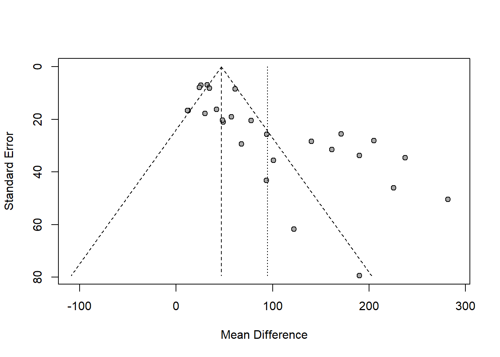
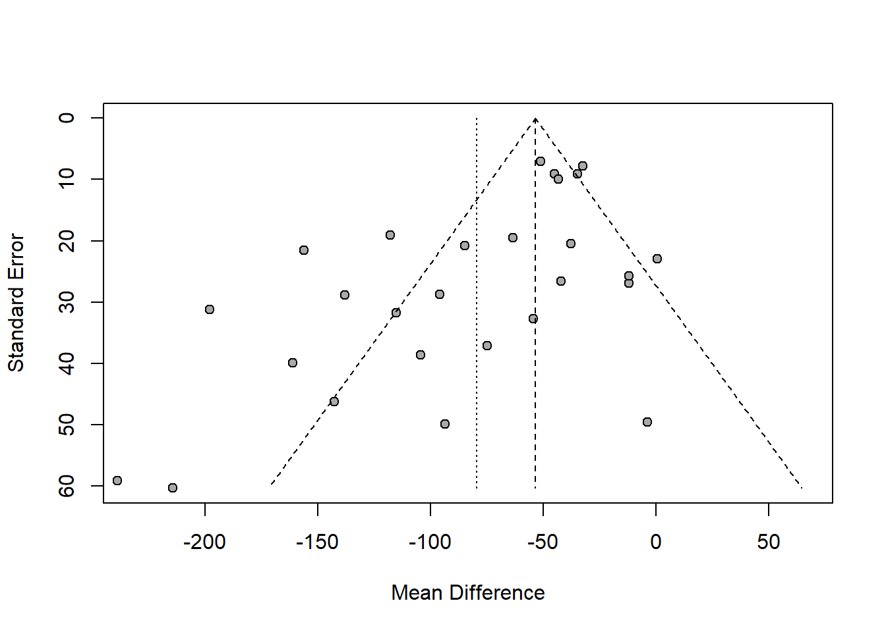
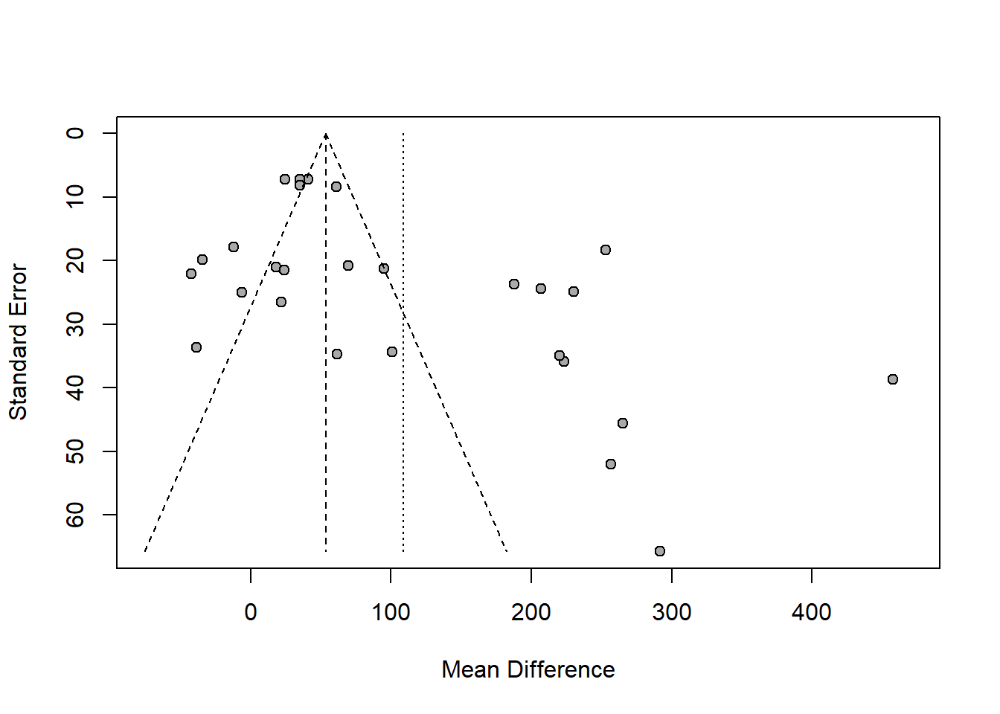
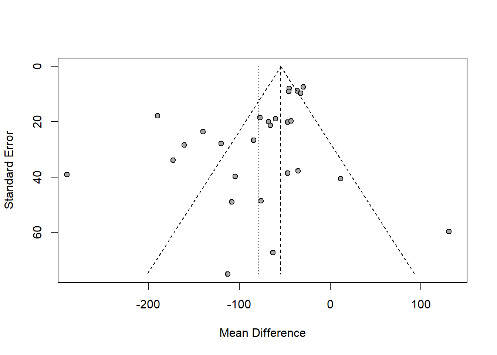

Neutral toys (1 = neutral toys included; 2 = neutral toys not included); Parent present (1 = absent; 2 = minimal interaction; 3 = moderate or full interaction); Setting = location of study (1 = home; 2 = laboratory; 3 = nursery); Country = gender inequality index, a measure of how gender egalitarian the country was at the time the study took place.
Loading the 'metafor' package (version 4.2-0). For an
introduction to the package please type: help(metafor)
library(openxlsx)
Warning: 程辑包'openxlsx'是用R版本4.2.3 来建造的
library(meta)
Warning: 程辑包'meta'是用R版本4.2.3 来建造的
Loading 'meta' package (version 6.2-1).
Type 'help(meta)' for a brief overview.
Readers of 'Meta-Analysis with R (Use R!)' should install
older version of 'meta' package: https://tinyurl.com/dt4y5drs
Number of studies combined: k = 27
Number of observations: o = 1610
MD 95%-CI z p-value
Common effect model 46.8758 [41.2914; 52.4602] 16.45 < 0.0001
Random effects model 94.7832 [66.7897; 122.7766] 6.64 < 0.0001
Quantifying heterogeneity:
tau^2 = 4678.7733 [2666.5809; 10251.8327]; tau = 68.4016 [51.6389; 101.2513]
I^2 = 88.0% [83.7%; 91.1%]; H = 2.88 [2.48; 3.36]
Test of heterogeneity:
Q d.f. p-value
216.00 26 < 0.0001
Details on meta-analytical method:
- Inverse variance method
- Restricted maximum-likelihood estimator for tau^2
- Q-Profile method for confidence interval of tau^2 and tau
According to the provided results, this is a summary of a meta-analysis. The results show the effect size estimates and confidence intervals for two models, as well as the quantification of heterogeneity and tests of its significance.
In the Common effect model, the effect size estimate is 46.8758 with a 95% confidence interval of [41.2914; 52.4602]. The corresponding z-value is 16.45, and the p-value is less than 0.0001, indicating a significant effect size.
In the Random effects model, the effect size estimate is 94.7832 with a 95% confidence interval of [66.7897; 122.7766]. The corresponding z-value is 6.64, and the p-value is less than 0.0001, also indicating a significant effect size.
The statistics related to heterogeneity are as follows:
tau^2 represents the estimated variance of heterogeneity, which is 4678.7733 with a 95% confidence interval of [2666.5809; 10251.8327].
tau represents the estimated standard deviation of heterogeneity, which is 68.4016 with a 95% confidence interval of [51.6389; 101.2513].
I^2 represents the percentage of heterogeneity, which is 88.0%, indicating substantial heterogeneity.
H represents the standardized index of heterogeneity, which is 2.88 with a 95% confidence interval of [2.48; 3.36].
The test of heterogeneity yields the following results:
The Q-value is 216.00 with 26 degrees of freedom, and the p-value is less than 0.0001, indicating significant heterogeneity happened on girls and boys playing male’s toy.
Number of studies combined: k = 27
Number of observations: o = 1610
MD 95%-CI z p-value
Common effect model -53.5213 [ -59.7585; -47.2841] -16.82 < 0.0001
Random effects model -79.5599 [-101.1964; -57.9233] -7.21 < 0.0001
Quantifying heterogeneity:
tau^2 = 2451.0440 [1332.6185; 6488.0519]; tau = 49.5080 [36.5050; 80.5484]
I^2 = 79.9% [71.4%; 85.9%]; H = 2.23 [1.87; 2.66]
Test of heterogeneity:
Q d.f. p-value
129.28 26 < 0.0001
Details on meta-analytical method:
- Inverse variance method
- Restricted maximum-likelihood estimator for tau^2
- Q-Profile method for confidence interval of tau^2 and tau
The test of heterogeneity yields the following results:
The Q-value is 129.28 with 26 degrees of freedom, and the p-value is less than 0.001, indicating significant heterogeneity happened on girls and boys playing female’s toy.
So we can see the sex difference in child’s toys preference.
Number of studies combined: k = 27
Number of observations: o = 1594
MD 95%-CI z p-value
Common effect model 53.4740 [47.8283; 59.1197] 18.56 < 0.0001
Random effects model 108.8697 [62.0450; 155.6944] 4.56 < 0.0001
Quantifying heterogeneity:
tau^2 = 14594.5851 [8849.8303; 29246.4845]; tau = 120.8081 [94.0735; 171.0160]
I^2 = 95.3% [94.1%; 96.3%]; H = 4.62 [4.12; 5.18]
Test of heterogeneity:
Q d.f. p-value
554.07 26 < 0.0001
Details on meta-analytical method:
- Inverse variance method
- Restricted maximum-likelihood estimator for tau^2
- Q-Profile method for confidence interval of tau^2 and tau
The test of heterogeneity yields the following results:
The Q-value is 554.07 with 26 degrees of freedom, and the p-value is less than 0.0001, indicating significant heterogeneity happened on boys choosing toys.
Number of studies combined: k = 27
Number of observations: o = 1626
MD 95%-CI z p-value
Common effect model -54.2515 [ -60.4773; -48.0257] -17.08 < 0.0001
Random effects model -78.6483 [-104.0622; -53.2344] -6.07 < 0.0001
Quantifying heterogeneity:
tau^2 = 3592.0457 [2018.1793; 8902.8299]; tau = 59.9337 [44.9242; 94.3548]
I^2 = 85.7% [80.3%; 89.6%]; H = 2.65 [2.26; 3.10]
Test of heterogeneity:
Q d.f. p-value
182.01 26 < 0.0001
Details on meta-analytical method:
- Inverse variance method
- Restricted maximum-likelihood estimator for tau^2
- Q-Profile method for confidence interval of tau^2 and tau
The test of heterogeneity yields the following results:
The Q-value is 182.01 with 26 degrees of freedom, and the p-value is less than 0.0001, indicating significant heterogeneity happend on girls choosing toys.
Forest plots to see the analysis
forest(m.raw,)

forest(m.raw02)

forest(m.raw03)

forest(m.raw04)
Funnel plot
funnel(m.raw)

funnel(m.raw02)

funnel(m.raw03)

funnel(m.raw04)

Funnel plot, the distribution of points reveals that some points deviate from the funnel region, indicating substantial heterogeneity among the studies. The funnel plot includes two dashed lines: the center line 50 and -50(mean difference), representing the expected effect size. The majority of points are concentrated on one side of the funnel plot, suggesting a tendency towards a particular direction in the study results.
The vertical axis represents the standard error, ranging from 0 to 80, which indicates the precision and reliability of the study results. The horizontal axis represents the mean difference, ranging from -100 to 300. Those with smaller standrd errors and clustered around the center line are considered more reliable. Smaller errors indicate higher accuracy of the study results, and clustering around the center line suggests consistency among these studies. Such studies are deemed more reliable because their results are relatively stable and less influenced by random errors.
The findings indicate a high level of residual heterogeneity (I^2 = 93.92%), suggesting significant variability among studies. The model has a relatively low explanatory power (R^2 = 14.96%), indicating that it does not fully account for the observed heterogeneity.
When testing the influence of the moderator variables (male authors and female authors), the results show QM(df = 2) = 5.5707, p-val = 0.0617. Although the p-value is not significant, there might be a trend indicating that the gender of the researchers could have some impact on the effect size.